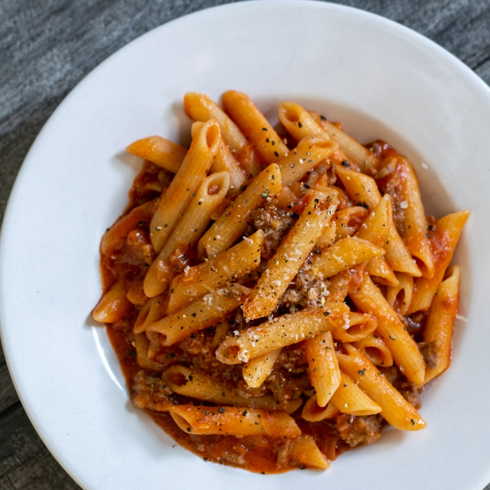
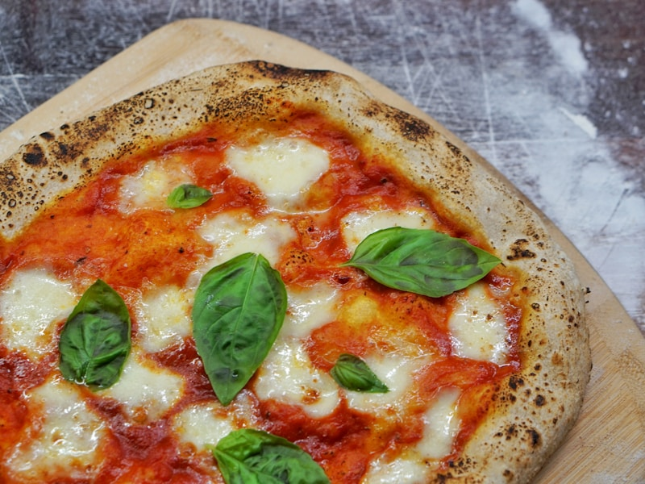
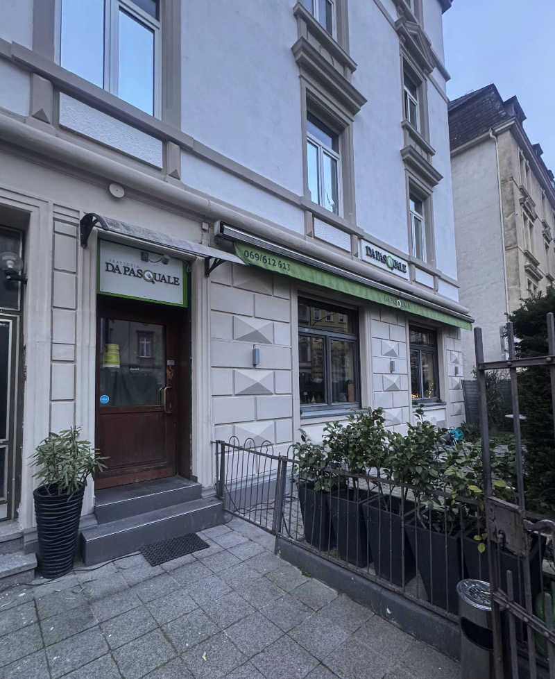

Klassische italienische Pasta mit Ei, Speck und Pecorino Romano
€18,50
Frischer Teig mit Tomaten, Mozzarella und Basilikum
€12,00
Genießen Sie italienisches Flair in entspannter Umgebung
ReservierungTäglich frisch und direkt aus Italien
Traditionelle italienische Rezepte
Mit Liebe zubereitet für Sie
Willkommen bei der Trattoria Da Pasquale – Ihrem authentischen italienischen Restaurant in Frankfurt. Seit Jahren servieren wir unseren Gästen echte italienische Küche mit frischen Zutaten und traditionellen Rezepten.
Bei uns bedeutet „a tavola" – „zum Tisch" – dass Sie hier Familie sind. Ob ein schnelles Mittagessen, ein gemütlicher Abend mit Freunden oder eine Feier – wir schaffen die perfekte Atmosphäre für jeden Anlass.
Unsere Pizzas werden in unserem Steinofen gebacken, unsere Pastas täglich frisch zubereitet. Qualität und Geschmack stehen an erster Stelle. Pasquale und seine Frau sowie ihr Team sind übrigens auch wunderbar herzliche Gastgeber, so dass man sich beim Besuch ihrer schönen Trattoria immer willkommen und wohl fühlt.
"Fantastische Pizza und sehr freundliches Personal. Ich komme gerne wieder!"
Marco S."Die Pasta schmeckt wie in Italien! Absolute Empfehlung für alle Italienfans."
Julia K."Ein Stück Italien mitten in Frankfurt! Die Gerichte sind authentisch und köstlich."
Anna L."Super Service und eine tolle Weinauswahl. Wir kommen immer wieder gerne hierher."
Max P."Die beste Pizza, die ich seit langem gegessen habe. Knusprig und perfekt belegt!"
Sophie B."Großartige Atmosphäre und leckeres Essen. Das beste italienische Restaurant in Frankfurt!"
Thomas M.Mörfelder Landstraße 82
60598 Frankfurt am Main
069 / 612 613
0172 / 6848848
Mo - Fr: 12:00 - 14:30 Uhr
Mo - Sa: 18:00 - 23:00 Uhr
Buchen Sie jetzt einen Tisch bei uns. Wir freuen uns auf Ihren Besuch!
JETZT RESERVIEREN